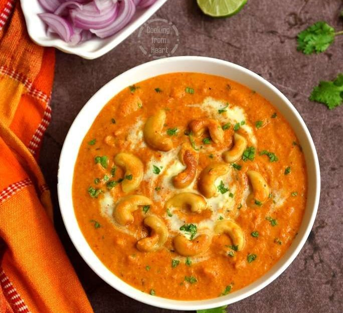

🥜 Kaju Curry

Description:
Kaju Curry is a rich, creamy North Indian curry made with cashew nuts
simmered in a tomato-based gravy. It's a festive delight that's best
served with naan or jeera rice.
Prep Time:
⏱️ 30 minutes
Ingredients:
- 1 cup whole cashews (kaju)
- 2 tbsp oil or ghee
- 2 medium onions (finely chopped)
- 2 medium tomatoes (pureed)
- 1 tsp ginger-garlic paste
- 1/2 tsp turmeric powder
- 1 tsp red chili powder
- 1 tsp coriander powder
- 1/2 tsp garam masala
- 1/2 cup cream or milk
- Salt to taste
- Fresh coriander for garnish
Instructions:
- Heat 1 tbsp oil and lightly roast the cashews until golden. Set aside.
- In the same pan, add more oil and sauté onions until translucent.
- Add ginger-garlic paste and cook for a minute.
- Add tomato puree and all the dry spices. Cook until the oil separates.
- Stir in the roasted cashews and add cream or milk. Mix gently.
- Simmer the curry for 5–7 minutes on low heat.
-
Garnish with chopped coriander and serve hot with naan or rice.